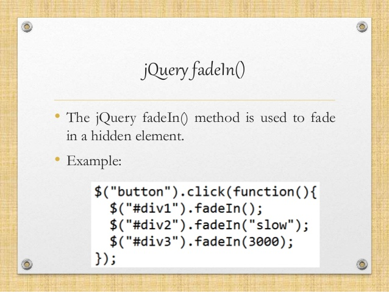

jQuery fadeIn

The fadeIn() method gradually changes the opacity, for selected elements, from hidden to visible (fading effect).
Note: Hidden elements will not be displayed at all (no longer affects the layout of the page).
Tip: This method is often used together with the fadeOut() method.
Syntax :
$(selector).fadeIn(speed,easing,callback)
For more information on jQuery fadeIn : Visit
Home
Animate
Slide
Logout